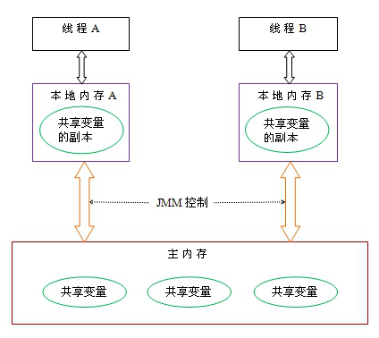
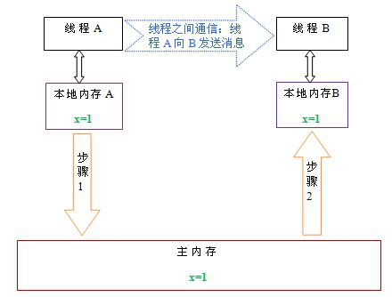

多线程线程安全
什么是线程安全？
当多个线程同时共享，同一个全局变量或静态变量，做写的操作时，可能会发生数据冲突问题，也就是线程安全问题。但是做读操作是不会发生数据冲突问题。
结论:多个线程共享同一个全局成员变量时，做写的操作可能会发生数据冲突问题。
线程安全解决办法
如何解决多线程之间线程安全问题
使用多线程之间同步 synchronized 或使用锁(lock)。
为什么使用线程同步或使用锁能解决线程安全问题呢？
将可能会发生数据冲突问题(线程不安全问题)，只能让当前一个线程进行执行。代码执行完成后释放锁，让后才能让其他线程进行执行。这样的话就可以解决线程不安全问题。
什么是多线程之间同步
当多个线程共享同一个资源,不会受到其他线程的干扰。
内置的锁
Java 提供了一种内置的锁机制来支持原子性
每一个Java 对象都可以用作一个实现同步的锁，称为内置锁，线程进入同步代码块之前自动获取到锁，代码块执行完成正常退出或代码块中抛出异常退出时会释放掉锁。
内置锁为互斥锁，即线程 A 获取到锁后，线程 B 阻塞直到线程 A 释放锁，线程 B 才能获取到同一个锁。
内置锁使用 synchronized 关键字实现，synchronized 关键字有两种用法：1.修饰需要进行同步的方法（所有访问状态变量的方法都必须进行同步），此时充当锁的对象为调用同步方法的对象。 2.同步代码块和直接使用 synchronized 修饰需要同步的方法是一样的，但是锁的粒度可以更细，并且充当锁的对象不一定是 this，也可以是其它对象，所以使用起来更加灵活
同步代码块 synchronized
1 | 就是将可能会发生线程安全问题的代码，给包括起来。 |
同步的前提
必须要有两个或者两个以上的线程
必须是多个线程使用同一个锁
必须保证同步中只能有一个线程在运行
好处：解决了多线程的安全问题。
弊端：多个线程需要判断锁，较为消耗资源、抢锁的资源。
同步方法
什么是同步方法？
在方法上修饰 synchronized 称为同步方法。
同步方法使用的是什么锁？
同步函数使用 this 锁。
证明方式: 一个线程使用同步代码块(this 明锁),另一个线程使用同步函数。如果两个线程抢票不能实现同步，那么会出现数据错误。
静态同步函数
什么是静态同步函数？
方法上加上 static 关键字，使用 synchronized 关键字修饰 或者使用类.class 文件。
静态的同步函数使用的锁是 该函数所属字节码文件对象
可以用 getClass 方法获取，也可以用当前 类名.class 表示。
总结：
synchronized 修饰方法使用锁是当前 this 锁。
synchronized 修饰静态方法使用锁是当前类的字节码文件。
多线程死锁
什么是多线程死锁？
同步中嵌套同步,导致锁无法释放
Threadlocal
什么是 Threadlocal
ThreadLocal 提高一个线程的局部变量，访问某个线程拥有自己局部变量。
当使用 ThreadLocal 维护变量时，ThreadLocal 为每个使用该变量的线程提供独立的变量副本，所以每一个线程都可以独立地改变自己的副本，而不会影响其它线程所对应的副本。
ThreadLocal 的接口方法
• void set(Object value) 设置当前线程的线程局部变量的值。
• public Object get() 该方法返回当前线程所对应的线程局部变量。
• public void remove() 将当前线程局部变量的值删除，目的是为了减少内存的占用，该方法是 JDK 5.0 新增的方法。需要指出的是，当线程结束后，对应该线程的局部变量将自动被垃圾回收，所以显式调用该方法清除线程的局部变量并不是必须的操作，但它可以加快内存回收的速度。
• protected Object initialValue() 返回该线程局部变量的初始值，该方法是一个 protected 的方法，显然是为了让子类覆盖而设计的。这个方法是一个延迟调用方法，在线程第 1 次调用 get()或 set(Object)时才执行，并且仅执行 1 次。ThreadLocal 中的缺省实现直接返回一个 null。
ThreadLoca 实现原理
ThreadLoca 通过 map 集合，Map.put(“当前线程”,值)；
多线程有三大特性
原子性、可见性、有序性
什么是原子性
一个操作或者多个操作 要么全部执行并且执行的过程不会被任何因素打断，要么就都不执行。
一个很经典的例子就是银行账户转账问题：
比如从账户 A 向账户 B 转 1000 元，那么必然包括 2 个操作：从账户 A 减去 1000 元，往账户 B 加上 1000 元。这 2 个操作必须要具备原子性才能保证不出现一些意外的问题。
我们操作数据也是如此，比如 i = i+1；其中就包括，读取 i 的值，计算 i，写入 i。这行代码在 Java 中是不具备原子性的，则多线程运行肯定会出问题，所以也需要我们使用同步和 lock 这些东西来确保这个特性了。
原子性其实就是保证数据一致、线程安全一部分
什么是可见性
当多个线程访问同一个变量时，一个线程修改了这个变量的值，其他线程能够立即看得到修改的值。
若两个线程在不同的 cpu，那么线程 1 改变了 i 的值还没刷新到主存，线程 2 又使用了 i，那么这个 i 值肯定还是之前的，线程 1 对变量的修改线程没看到这就是可见性问题。
什么是有序性
程序执行的顺序按照代码的先后顺序执行。
一般来说处理器为了提高程序运行效率，可能会对输入代码进行优化，它不保证程序中各个语句的执行先后顺序同代码中的顺序一致，但是它会保证程序最终执行结果和代码顺序执行的结果是一致的。如下：
1 | int a = 10; //语句 1 |
则因为重排序，他还可能执行顺序为 2-1-3-4，1-3-2-4
但绝不可能 2-1-4-3，因为这打破了依赖关系。
显然重排序对单线程运行是不会有任何问题，而多线程就不一定了，所以我们在多线程编程时就得考虑这个问题了。
Java 内存模型
共享内存模型
Java 内存模型(简称 JMM)，JMM 决定一个线程对共享变量的写入时,能对另一个线程可见。 从抽象的角度来看，JMM 定义了线程和主内存之间的抽象关系：线程之间的共享变量存储在主内存（main memory）中，每个线程都有一个私有的本地内存（local memory），本地内存中存储了该线程以读/写共享变量的副本。本地内存是 JMM 的一个抽象概念，并不真实存在。它涵盖了缓存，写缓冲区，寄存器以及其他的硬件和编译器优化。例如：
从上图来看，线程 A 与线程 B 之间如要通信的话，必须要经历下面 2 个步骤：
- 首先，线程 A 把本地内存 A 中更新过的共享变量刷新到主内存中去。
- 然后，线程 B 到主内存中去读取线程 A 之前已更新过的共享变量。
下面通过示意图来说明这两个步骤：
如上图所示，本地内存 A 和 B 有主内存中共享变量 x 的副本。假设初始时，这三个内存中的 x 值都为 0。线程 A 在执行时，把更新后的 x 值（假设值为 1）临时存放在自己的本地内存 A 中。当线程 A 和线程 B 需要通信时，线程 A 首先会把自己本地内存中修改后的 x 值刷新到主内存中，此时主内存中的 x 值变为了 1。随后，线程 B 到主内存中去读取线程 A 更新后的 x 值，此时线程 B 的本地内存的 x 值也变为了 1。
从整体来看，这两个步骤实质上是线程 A 在向线程 B 发送消息，而且这个通信过程必须要经过主内存。JMM 通过控制主内存与每个线程的本地内存之间的交互，来为 java 程序员提供内存可见性保证。
总结：Java 内存模型，简称 JMM，定义了一个线程对另一个线程可见。共享变量存放在主内存中，每个线程都有自己的本地内存，当多个线程同时访问一个数据的时候，可能本地内存没有及时刷新到主内存，所以就会发生线程安全问题。
Volatile
什么是 Volatile
可见性也就是说一旦某个线程修改了该被 volatile 修饰的变量，它会保证修改的值会立即被更新到主存，当有其他线程需要读取时，可以立即获取修改之后的值。
在 Java 中为了加快程序的运行效率，对一些变量的操作通常是在该线程的寄存器或是 CPU 缓存上进行的，之后才会同步到主存中，而加了 volatile 修饰符的变量则是直接读写主存。Volatile 保证了线程间共享变量的及时可见性，但不能保证原子性。
Volatile 特性
1.保证此变量对所有的线程的可见性，这里的“可见性”，如本文开头所述，当一个线程修改了这个变量的值，volatile 保证了新值能立即同步到主内存，以及每次使用前立即从主内存刷新。但普通变量做不到这点，普通变量的值在线程间传递均需要通过主内存（详见：Java 内存模型）来完成。
2.禁止指令重排序优化。有 volatile 修饰的变量，赋值后多执行了一个“load addl $0x0, (%esp)”操作，这个操作相当于一个内存屏障（指令重排序时不能把后面的指令重排序到内存屏障之前的位置），只有一个 CPU 访问内存时，并不需要内存屏障；（什么是指令重排序：是指 CPU 采用了允许将多条指令不按程序规定的顺序分开发送给各相应电路单元处理）。
volatile 性能：
volatile 的读性能消耗与普通变量几乎相同，但是写操作稍慢，因为它需要在本地代码中插入许多内存屏障指令来保证处理器不发生乱序执行。
Volatile 与 Synchronized 区别
1.从而我们可以看出 volatile 虽然具有可见性但是并不能保证原子性。
2.性能方面，synchronized 关键字是防止多个线程同时执行一段代码，就会影响程序执行效率，而 volatile 关键字在某些情况下性能要优于 synchronized。
但是要注意 volatile 关键字是无法替代 synchronized 关键字的，因为 volatile 关键字无法保证操作的原子性。